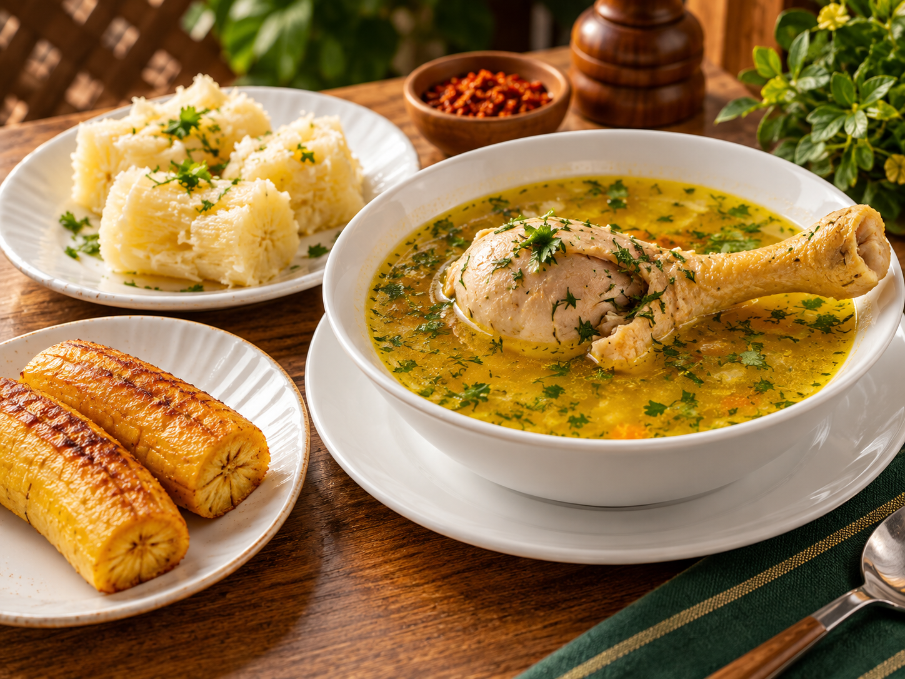
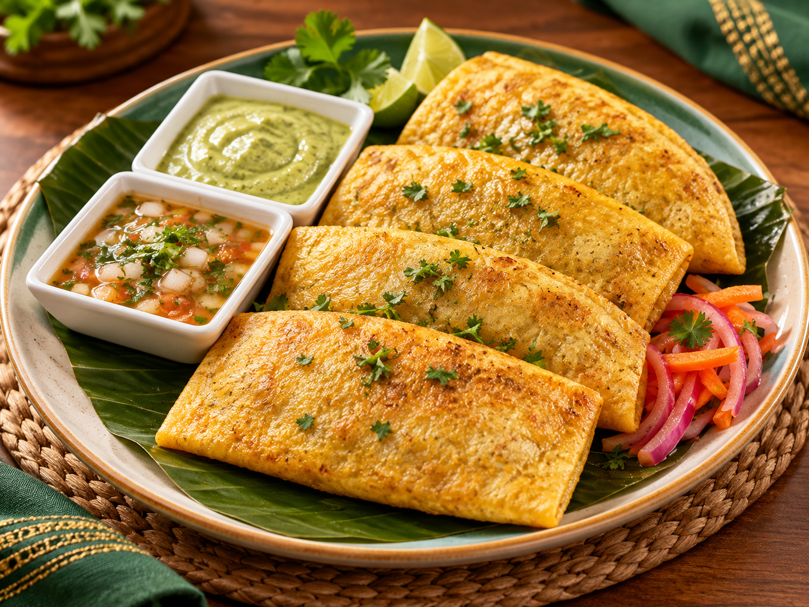
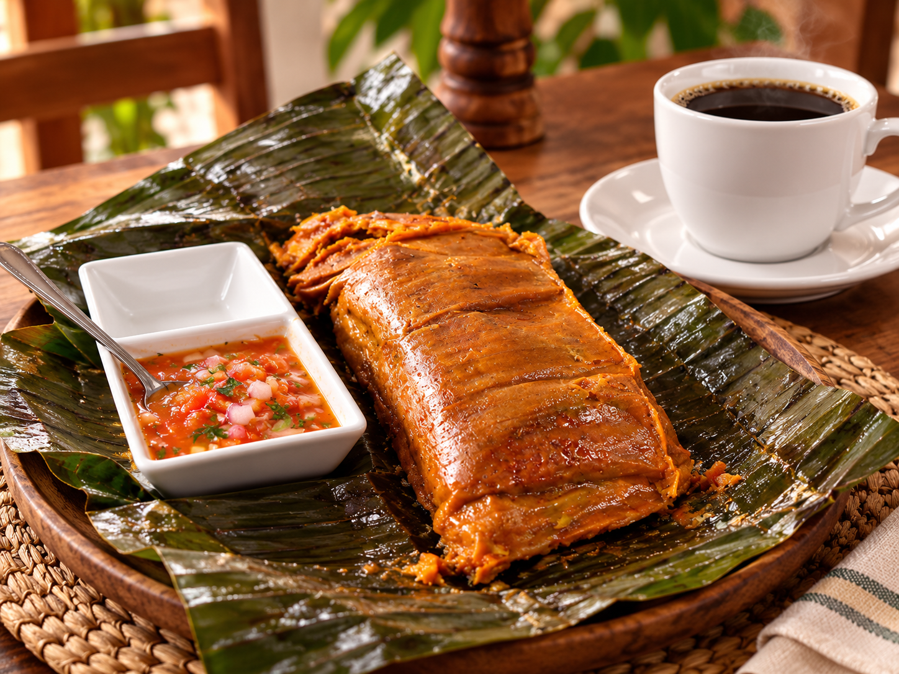
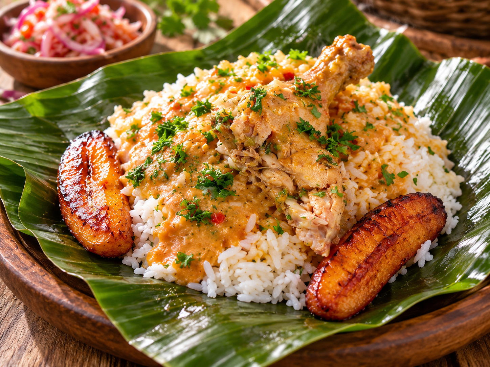

Galería gastronómica
¡Bienvenidos a nuestra galería! Descubre los sabores tradicionales que forman parte de la identidad gastronómica de D'Lucdy.
Nuestras especialidades
Conoce algunas de las preparaciones de nuestra gastronomía tradicional.
1. Caldo de gallina criolla

Una preparación tradicional con gallina, caldo aromático y acompañamientos típicos.
2. Empanadas doradas

Empanadas doradas acompañadas de salsas que complementan su sabor.
3. Tamal tradicional

Una preparación de nuestra gastronomía, servida sobre hoja de plátano.
4. Almuerzo con sazón manaba

Una combinación de ingredientes que representa el sabor de nuestra cocina tradicional.
Conoce nuestro restaurante
Nos encontramos en Santo Domingo de los Tsáchilas, sector El Colono.

Conoce nuestra gastronomía
| Gastronomía D'Lucdy | ||
|---|---|---|
| N.º | Preparación | Características |
| 1 | Caldo de gallina | Caldo con acompañamientos |
| 2 | Empanadas | Preparación dorada con salsas |
| 3 | Tamal | Preparación en hoja de plátano |
| 4 | Almuerzo tradicional | Arroz, pollo y maduro |
¡Visítanos!
Te invitamos a conocer nuestros almuerzos y disfrutar del auténtico sazón manaba.